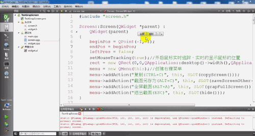
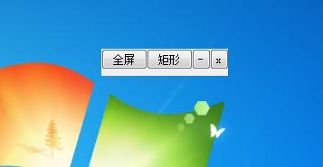
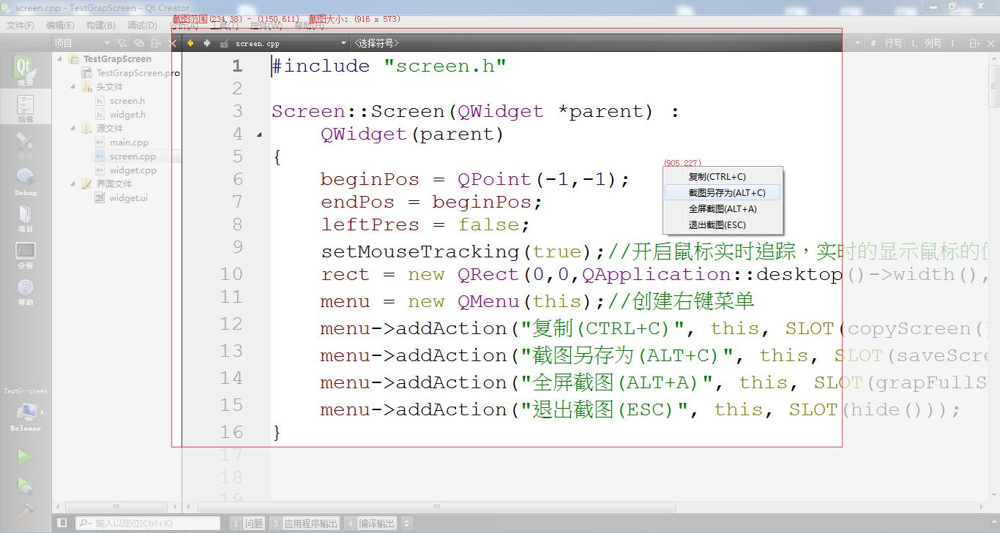
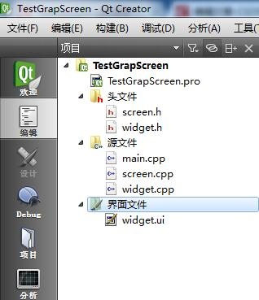

转载自： Qt 截图 - 灰信网（软件开发博客聚合） (freesion.com)](https://www.freesion.com/article/3411345767/) Qt] 截图*
一、简要说明
简单的实现截图功能，包括全屏截图，矩形区域截图，主要环境：win7-32bit，QT Creator5.2。
工程源代码 链接：https://pan.baidu.com/s/1xt-oyaz4pWNNFG4q85nmSA 密码：6uky
二、效果
运行效果

)

1、 全屏截图
//获取全屏截图
QPixmapfullScreen = QPixmap::grabWindow(QApplication::desktop()->winId());
//打开文件对话框
QStringfileName = QFileDialog::getSaveFileName(this, "文件另存为","",tr("ConfigFiles (*.jpg)"));
//保存截图
fullScreen.save(fileName,"jpg");2、 矩形截图：在全屏截图的基础上，在全屏截图选取一个矩形区域
fullScreen.copy(rect).save(fileName);//rect是一个矩形
或者是fullScreen.copy(x,y,width,height).save(fileName);//x,y为矩形左上角坐标，
width为矩形宽度，height为矩形的高度。
需要注意的是 屏幕左上角为（0,0），x,y分别向右、下递增。那么如何实现任意的矩形区域呢？
四、改进
1、 任意矩形区域
按下鼠标左键不放得到一个点P(x1,y1)
拖动鼠标
释放鼠标左键得到另外一个点Q(x2,y2)
如此得到一个以P、Q为对角的矩形
2、 实现动态矩形效果
拉上一层半透明的遮罩(其实就是一个半透明的showFullScreen窗体)
注意：拉上遮罩之前应将父窗体隐去，不然每一张全屏截图都会有父窗体
setWindowState(Qt::WindowMinimized);//最小化父窗体。（可能需要延时）
将矩形局域重绘(达到去除矩形区域部分的遮罩的效果)
3、 右键菜单(复制到剪切板+另存为+退出)以及增加快捷键
**复制到剪切板：**QGuiAPPLication::clipboard()->setPixmap(fullScreen.copy(rect));
组合快捷键Ctrl+C：*if(*e->key()Qt::Key_C&&e->modifiers()Qt::ControlModifier)
4、 矩形截图时，实时显示鼠标的位置、矩形截图的位置以及大小信息
**通过鼠标移动事件(设置鼠标轨迹跟踪：**setMouseTracking(true);
update()触发paintEvent重绘事件
5、 无边框窗体拖动
//实现无边框 (Qt::FramelessWindowHint去边框) 、Qt::WindowStaysOnTopHint窗体置顶 防止拖到任务栏下面
this->setWindowFlags(Qt::FramelessWindowHint| Qt::WindowSystemMenuHint |Qt::WindowMinMaxButtonsHint|Qt::WindowStaysOnTopHint);
//拖动(实际上是根据鼠标的移动 来移动窗体)
//当前鼠标相对窗体的位置-刚按下左键时的相对位置=鼠标移动的大小
move(e->pos()-beginPos+this->pos());
//鼠标移动的大小+窗体原来的位置=窗体移动后的位置6、 窗体贴边(当窗体靠在屏幕上边，并且鼠标离开窗体时，窗体贴边，当鼠标进入窗体时，窗体全部展示)
//窗体贴边
if(this->pos().y()<=0)//窗体贴在屏幕上边
{
move(pos().x(),-29);//贴边
}
//窗体弹出
if(this->pos().y()<=0)//鼠标进入并且已经贴边
{
move(pos().x(),0);//弹出整个窗体
}五、工程结构

六、源文件
screen.h文件
#ifndef SCREEN_H
#define SCREEN_H
#include <QWidget>
#include <QPoint>
#include <QMouseEvent>
#include <QContextMenuEvent>
#include <QMenu>//右键菜单
#include <QPaintEvent>
#include <QPainter>//画笔
#include <QPixmap>
#include <QDebug>
#include <QDesktopWidget>
#include <QApplication>
#include <QFileDialog>
#include <QShowEvent>
#include <QClipboard>
#include <QKeyEvent>
#include <QRect>
#include <QFile>
class Screen : public QWidget
{
Q_OBJECT
public:
explicit Screen(QWidget *parent = 0);
signals:
public slots:
void saveScreenOther();//截图另存为
void grapFullScreen();//全屏截图
void copyScreen(); //右键复制到粘贴板
protected:
void contextMenuEvent(QContextMenuEvent *); //--右键菜单事件
void mousePressEvent(QMouseEvent *e); //--鼠标按下事件
void mouseMoveEvent(QMouseEvent *e); //--鼠标移动事件
void mouseReleaseEvent(QMouseEvent *e); //--鼠标释放（松开）事件
void paintEvent(QPaintEvent *); //--画图事件
void showEvent(QShowEvent *); //--窗体show事件
void keyPressEvent(QKeyEvent *e); //--按键事件
private:
QPoint beginPos;//记录鼠标的起始位置
QPoint endPos;//记录鼠标的结束位置
QMenu *menu; //右键菜单对象
bool leftPres;//记录鼠标左键是否按下，按下为true
QRect * rect; //矩形截图区域
public:
QPixmap fullScreen;//全屏截图
public:
QPoint getBeginPos();//获取鼠标的起始位置
QPoint getEndPos();//获取鼠标的结束位置
void setBeginPos(QPoint p);//设置鼠标的起始位置
void setEndPos(QPoint p);//设置鼠标的结束位置
};
#endif // SCREEN_Hwidgets.h文件
#ifndef WIDGET_H
#define WIDGET_H
#include <QWidget>
namespace Ui {
class Widget;
}
class Widget : public QWidget
{
Q_OBJECT
public:
explicit Widget(QWidget *parent = 0);
~Widget();
private slots:
void on_pushButton_clicked();
void on_pushButton_2_clicked();
void on_pushButton_4_clicked();
void on_pushButton_3_clicked();
protected:
void enterEvent(QEvent *e); //--鼠标进入事件
void leaveEvent(QEvent *e); //--鼠标离开事件
void mousePressEvent(QMouseEvent *e); //--鼠标按下事件
void mouseMoveEvent(QMouseEvent *e); //--鼠标移动事件
void mouseReleaseEvent(QMouseEvent *e); //--鼠标释放（松开）事件
private:
Ui::Widget *ui;
private:
bool leftPress;
QPoint beginPos;
};
#endif // WIDGET_Hscreen.cpp文件
#include "screen.h"
Screen::Screen(QWidget *parent) :
QWidget(parent)
{
beginPos = QPoint(-1,-1);
endPos = beginPos;
leftPres = false;
setMouseTracking(true);//开启鼠标实时追踪，实时的显示鼠标的位置
rect = new QRect(0,0,QApplication::desktop()->width(),QApplication::desktop()->height());
menu = new QMenu(this);//创建右键菜单
menu->addAction("复制(CTRL+C)", this, SLOT(copyScreen()));
menu->addAction("截图另存为(ALT+C)", this, SLOT(saveScreenOther()));
menu->addAction("全屏截图(ALT+A)", this, SLOT(grapFullScreen()));
menu->addAction("退出截图(ESC)", this, SLOT(hide()));
}
void Screen::copyScreen() //右键复制到粘贴板
{
QGuiApplication::clipboard()->setPixmap(fullScreen.copy(*rect));
}
void Screen::contextMenuEvent(QContextMenuEvent *) //右键菜单事件
{
this->setCursor(Qt::ArrowCursor);
menu->exec(cursor().pos());
}
void Screen::mousePressEvent(QMouseEvent *e) //--鼠标按下事件
{
if (e->button() == Qt::LeftButton)//鼠标左键按下
{
leftPres = true;
setBeginPos(e->pos());//鼠标相对窗体的位置
}
}
void Screen::mouseMoveEvent(QMouseEvent *e) //--鼠标移动事件
{
if(leftPres)
{
setEndPos(e->pos());
}
update();//重绘、触发画图事件
}
void Screen::mouseReleaseEvent(QMouseEvent *e) //--鼠标释放（松开）事件
{
leftPres = false;
setEndPos(e->pos());
//使得起始点在左上角，结束点在右下角
if(beginPos.x()>endPos.x())
{
beginPos.setX(beginPos.x() + endPos.x());
endPos.setX(beginPos.x() - endPos.x());
beginPos.setX(beginPos.x() - endPos.x());
}
if(beginPos.y()>endPos.y())
{
beginPos.setY(beginPos.y() + endPos.y());
endPos.setY(beginPos.y() - endPos.y());
beginPos.setY(beginPos.y() - endPos.y());
}
rect->setRect(beginPos.x(),beginPos.y(),endPos.x()-beginPos.x(),endPos.y()-beginPos.y());
}
QPoint Screen::getBeginPos()//获取鼠标的起始位置
{
return beginPos;
}
QPoint Screen::getEndPos()//获取鼠标的结束位置
{
return endPos;
}
void Screen::setBeginPos(QPoint p)//设置鼠标的起始位置
{
this->beginPos = p;
}
void Screen::setEndPos(QPoint p)//设置鼠标的结束位置
{
this->endPos = p;
}
void Screen::paintEvent(QPaintEvent *) //--画图事件
{
QPainter painter(this); //将当前窗体对象设置为画布
QPen pen;
pen.setColor(Qt::red);//设置笔色
pen.setWidth(1); //画笔线条宽度
painter.setPen(pen);//设置画笔
int lx = beginPos.x()<endPos.x()?beginPos.x():endPos.x();//矩形截图区域左上角x坐标
int ly = beginPos.y()<endPos.y()?beginPos.y():endPos.y();//矩形截图区域右上角x坐标
int w = beginPos.x()<endPos.x()?endPos.x()-beginPos.x():beginPos.x()-endPos.x();//矩形截图区域宽度
int h = beginPos.y()<endPos.y()?endPos.y()-beginPos.y():beginPos.y()-endPos.y();//矩形截图区域高度
QRect rect = QRect(lx,ly,w,h);//矩形截图区域
if(lx!=-1 && w>0 && h>0)//防止第一次就重绘 并且宽高大于0时才进行截图操作
{
painter.drawPixmap(rect,fullScreen,rect);//重绘截图矩形部分，即恢复原图，达到去除幕布效果
painter.drawRect(lx, ly, w, h);//画截图矩形
//截图区域大小位置提示
if(ly>10)//避免看不到提示,在截图矩形上边不接近屏幕上边时，提示在截图矩形的上边的上面
{
painter.drawText(lx + 2, ly - 8, tr("截图范围(%1,%2) - (%3,%4) 截图大小：(%5 x %6)") .arg(lx).arg(ly).arg(lx + w).arg(ly + h).arg(w).arg(h));
}
else//在截图矩形上边接近屏幕上边时，提示在截图矩形的上边的下面
{
painter.drawText(lx + 2, ly + 12, tr("截图范围(%1,%2) - (%3,%4) 截图大小：(%5 x %6)") .arg(lx).arg(ly).arg(lx + w).arg(ly + h).arg(w).arg(h));
}
}
//实时显示鼠标的位置
painter.drawText(cursor().pos().x(), cursor().pos().y(), tr("(%1,%2)") .arg(cursor().pos().x()).arg(cursor().pos().y()));
}
void Screen::showEvent(QShowEvent *) //--窗体show事件
{
//设置透明度实现模糊背景
setWindowOpacity(0.7);
}
void Screen::saveScreenOther()
{
QString fileName = QFileDialog::getSaveFileName(this, "截图另存为", "", "Image (*.jpg *.png *.bmp)");
if (fileName.length() > 0) {
fullScreen.copy(*rect).save(fileName,"bmp");
close();
}
}
void Screen::grapFullScreen()
{
endPos.setX(-1);//此时避免画截图矩形
QString fileName = QFileDialog::getSaveFileName(this, "保存全屏截图", "", "JPEG Files (*.jpg)");
if (fileName.length() > 0)
{
fullScreen.save(fileName, "jpg");
close();
}
this->hide();
}
void Screen::keyPressEvent(QKeyEvent *e) //按键事件
{
/// Esc 键退出截图;
if (e->key() == Qt::Key_Escape)
{
hide();
}///CTRL+C 复制
else if(e->key() == Qt::Key_C && e->modifiers() == Qt::ControlModifier)
{
QGuiApplication::clipboard()->setPixmap(fullScreen.copy(*rect));
}///截图另存为(ALT+C)
else if(e->key() == Qt::Key_C && e->modifiers() == Qt::AltModifier)
{
saveScreenOther();
}///全屏截图(ALT+A)
else if(e->key() == Qt::Key_A && e->modifiers() == Qt::AltModifier)
{
grapFullScreen();
}
else
{
e->ignore();
}
}
widget.cpp文件
#include "widget.h"
#include "ui_widget.h"
#include <QMessageBox>
#include <QDesktopWidget>
#include <QFileDialog>
#include <QScreen>
#include <QString>
#include <QDebug>
#include <QPoint>
#include <QTime>
#include "screen.h"
Widget::Widget(QWidget *parent) :
QWidget(parent),
ui(new Ui::Widget)
{
ui->setupUi(this);
beginPos = this->pos();
leftPress = false;
this->setProperty("CanMove", true);
//实现无边框 (Qt::FramelessWindowHint去边框) Qt::WindowStaysOnTopHint 窗体置顶 防止拖到任务栏下面
this->setWindowFlags(Qt::FramelessWindowHint | Qt::WindowSystemMenuHint | Qt::WindowMinMaxButtonsHint|Qt::WindowStaysOnTopHint);
}
Widget::~Widget()
{
delete ui;
}
void Widget::mousePressEvent(QMouseEvent *e) //--鼠标按下事件
{
if (e->button() == Qt::LeftButton)//鼠标左键按下
{
leftPress = true;
beginPos = e->pos();//鼠标相对窗体的位置
}
}
void Widget::mouseMoveEvent(QMouseEvent *e) //--鼠标移动事件
{
if (leftPress)
{//当前鼠标相对窗体的位置-刚按下左键时的相对位置=鼠标移动的大小
move(e->pos() - beginPos + this->pos());
// 鼠标移动的大小+窗体原来的位置=窗体移动后的位置
}
}
void Widget::mouseReleaseEvent(QMouseEvent *e) //--鼠标释放（松开）事件
{
leftPress = false;
}
void Widget::enterEvent(QEvent *e) //--鼠标进入事件
{
if(this->pos().y()<=0)//鼠标进入并且已经贴边
{
move(pos().x(),0);//弹出整个窗体
}
}
void Widget::leaveEvent(QEvent *e) //--鼠标离开事件
{
if(this->pos().y()<=0)//窗体贴在屏幕上边
{
move(pos().x(),-29);//贴边
}
}
void Widget::on_pushButton_2_clicked()
{
//截图之前隐去窗体，不然截图之中就会有窗体的存在
if( windowState() != Qt::WindowMinimized )
{
setWindowState( Qt::WindowMinimized );//最小化父窗体
}
//延时等待父窗体最小化 延时250毫秒
QTime _Timer = QTime::currentTime().addMSecs(250);
while( QTime::currentTime() < _Timer )
{
QCoreApplication::processEvents(QEventLoop::AllEvents, 100);
}
//先获取全屏截图，再拉上幕布
Screen *m = new Screen();
m->fullScreen = QPixmap::grabWindow(QApplication::desktop()->winId());
m->showFullScreen();
}
void Widget::on_pushButton_clicked()
{
//获取全屏截图
QPixmap p = QPixmap::grabWindow(QApplication::desktop()->winId());
//打开文件对话框
QString fileName = QFileDialog::getSaveFileName(this, "文件另存为","",tr("Config Files (*.bmp)"));
//保存截图
if(fileName.length() > 0 && p.save(fileName,"bmp"))
{
QMessageBox::information(this, "提示", "保存成功!",QMessageBox::Ok);
}
}
void Widget::on_pushButton_4_clicked()
{
if( windowState() != Qt::WindowMinimized )
{
setWindowState( Qt::WindowMinimized );//最小化窗体
}
}
void Widget::on_pushButton_3_clicked()
{
this->close();//关闭窗体
}main.cpp文件
#include "widget.h"
#include <QApplication>
#include <screen.h>
#include <QDebug>
int main(int argc, char *argv[])
{
QApplication a(argc, argv);
Widget w;
w.show();
return a.exec();
}七、注意事项
**update()触发*paintEvent重绘事件，不是直接调用*paintEvent()。